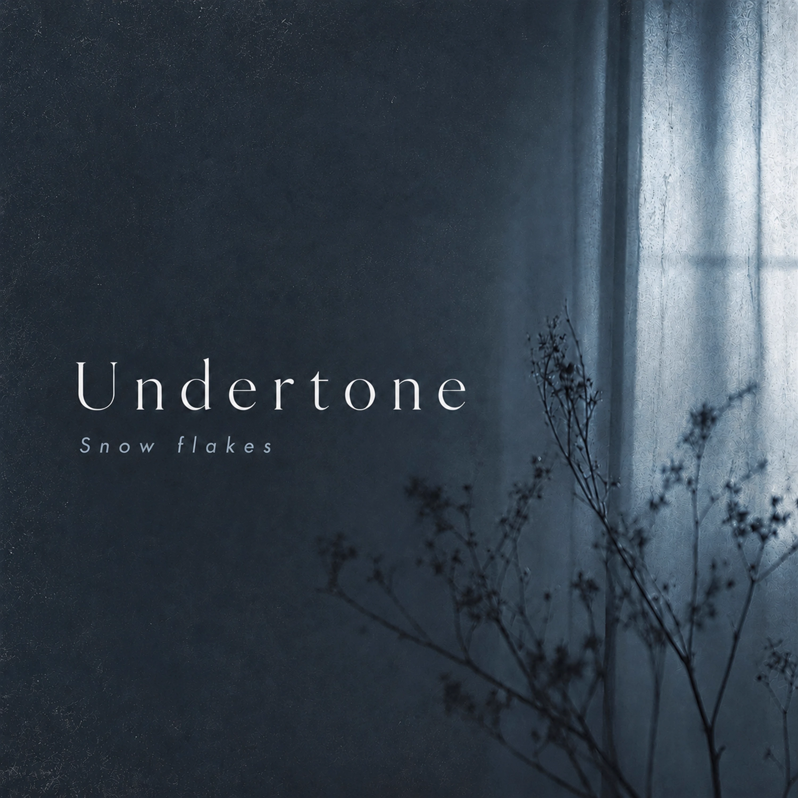

Selected Releases
All tracks streaming worldwide on major platforms.

Undertone
Spring Waltz / Aftertone
Two tracks capturing the quiet tension between what's felt and what's left unsaid. Spring Waltz flows with bittersweet lightness; Aftertone lingers long after the last note.

Round Bounce
The energy of three musicians locked in a room together — upbeat, live-feeling, impossible to sit still to. Born from the story's most alive moments.

SWEETs
Delicate and almost fragile — a melody that holds the sweetness of moments you can't quite hold onto. Tied to a scene in the novel that readers keep returning to.

The Sound Left Behind
置いた音
Inspired by the moment in the novel when a sound is placed somewhere and never picked up again. Quiet, unhurried, and somehow impossible to forget.

Little Snow
Small. Nearly melting. But it didn't disappear. The musical companion to the novel's most tender arc — a sound that stays with you without asking for anything.